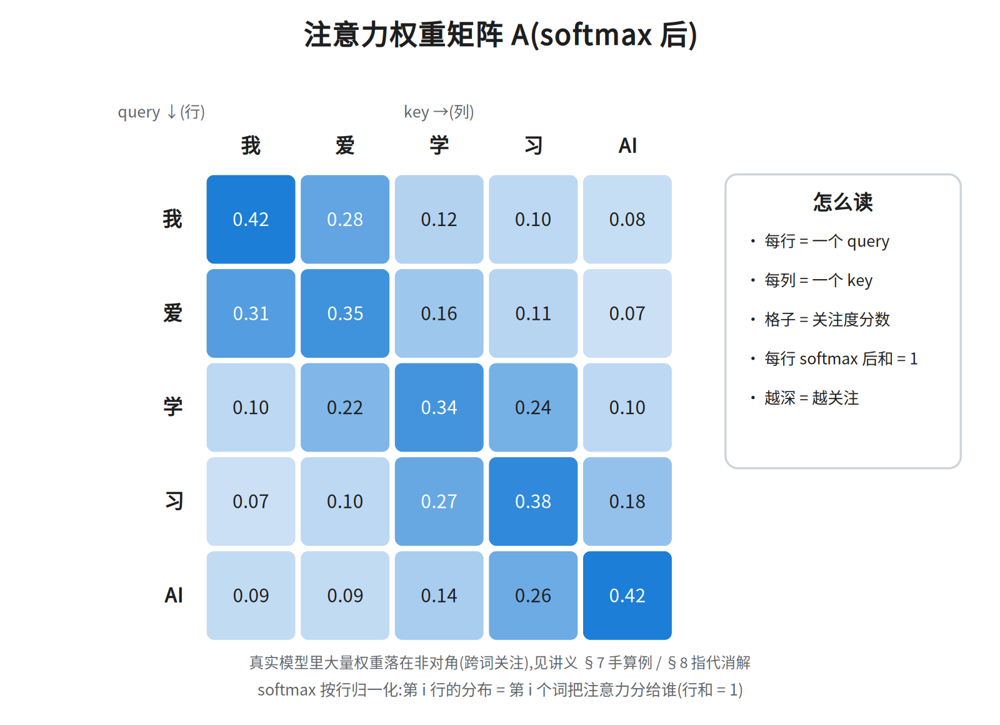
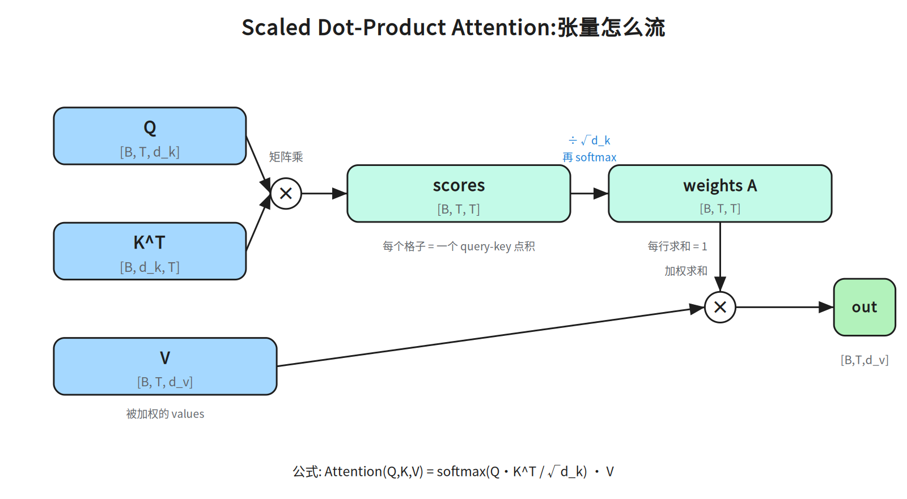
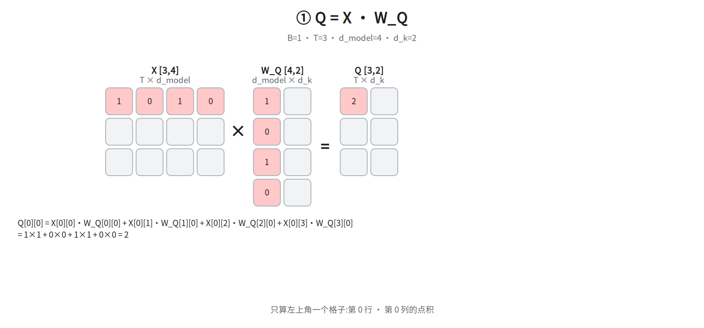
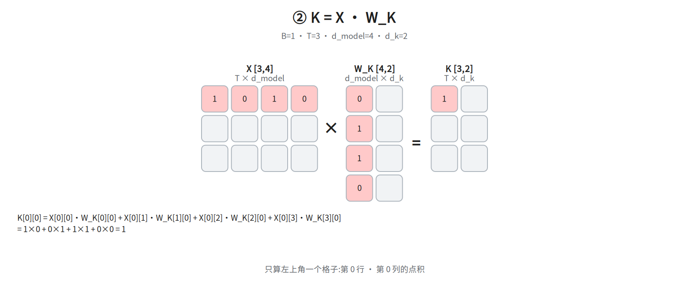
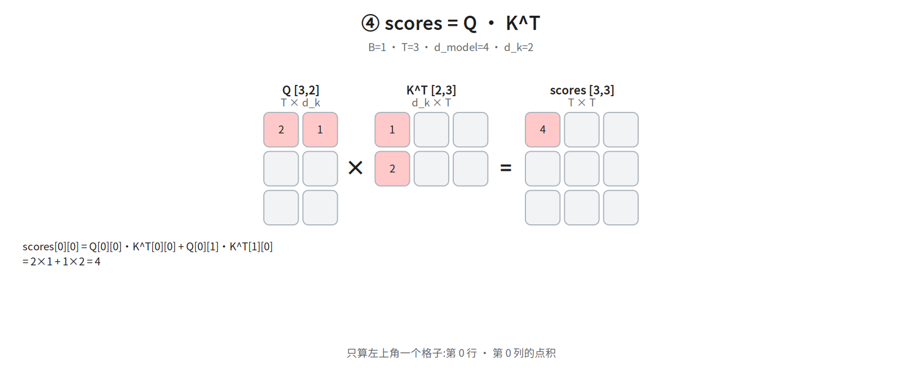
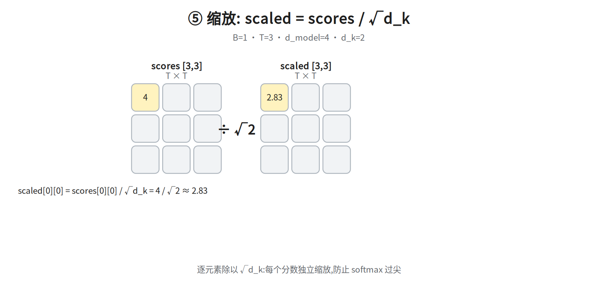
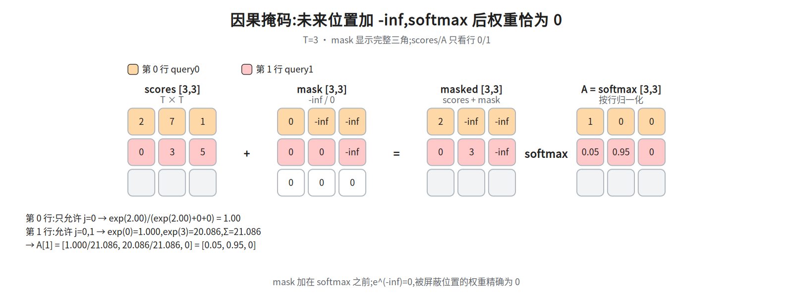
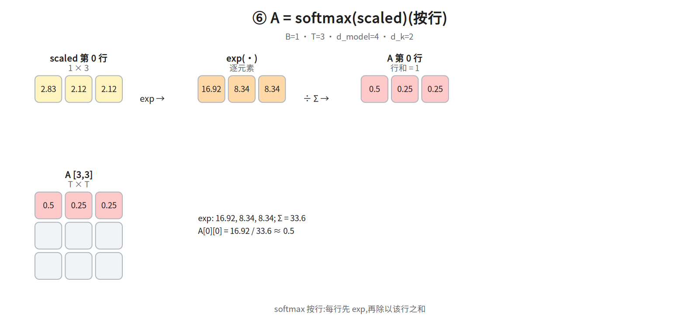
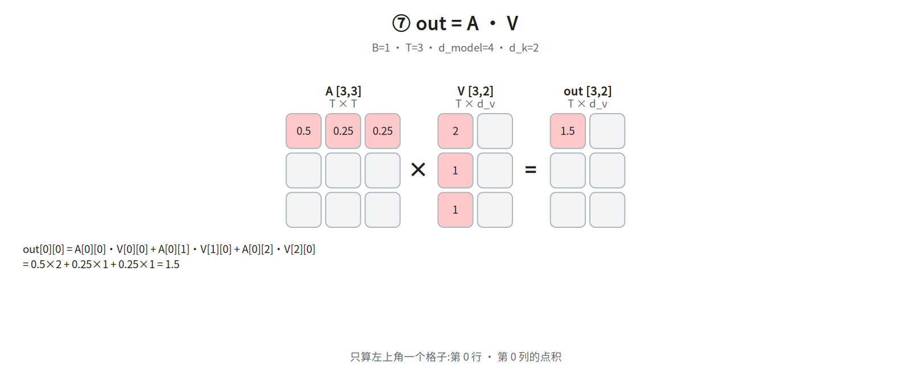
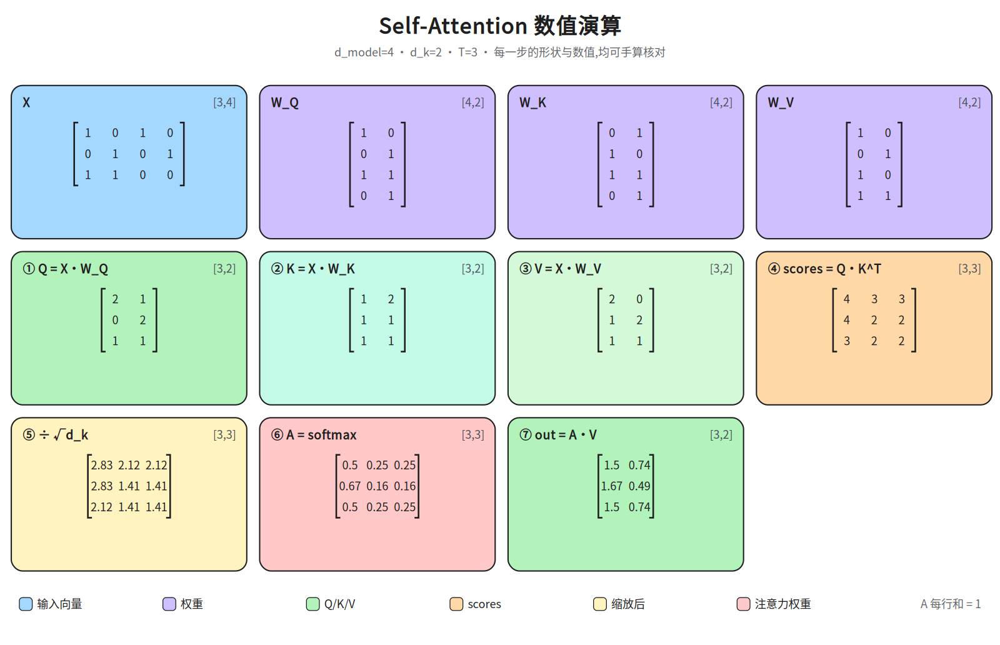

第二层 · 心脏 —— Self-Attention 的 Q/K/V¶
本层回答:手里有一堆
[B, T, d_model]的向量(每个词一个),怎么让每个词看到别的词、并按相关度汇总信息?这是整个 Transformer 最核心的机制。
0. 依赖图(学习顺序)¶
根节点是可以无条件接受的事实(个别根节点正文会补推导,如 §4 的 D,可先接受、后自证);箭头表示「前者支撑后者」。学习顺序 = 从根到汇点的拓扑序。
graph TD
X["输入 X: [B, T, d_model]<br/>B=批量大小, T=词数, d_model=每词向量维度"] --> P["线性投影 → Q, K, V"]
P --> C["scores = Q · Kᵀ<br/>[B, T, T]"]
C --> S["除以 √d_k<br/>稳定方差"]
D["点积方差 ≈ d_k<br/>(前提:q、k 分量独立、均值 0、方差 1)"] --> S
S --> A["softmax → 权重 A<br/>每行和 = 1"]
A --> O["加权求和 out = A · V"]
P --> O
O --> R["每个 token 的新表示<br/>[B, T, d_model]"]1. 一句话直觉:注意力 = 软性查字典¶
想象你在图书馆找书:
检索过程 = 用你的 Query 去和每本书的 Key 比对相似度 → 得到一组"该看哪本书"的权重 → 按权重把各本书的 Value 加权求和,就是你带走的答案。
和真实查字典的区别:字典是硬检索(要么命中要么不命中),注意力是软检索——每本书都给一个 [0,1] 的权重,最后取"所有书的加权混合"。软的好处:全程可微,能端到端训练。
关键:Q、K、V 都来自同一个输入 X(所以才叫 self-attention)。是 X 乘三个不同的可学习权重矩阵投影出来的。
2. 从 X 到 Q/K/V:三个线性投影¶
Q = X · W_Q X [B, T, d_model] W_Q [d_model, d_k] → Q [B, T, d_k]
K = X · W_K X [B, T, d_model] W_K [d_model, d_k] → K [B, T, d_k]
V = X · W_V X [B, T, d_model] W_V [d_model, d_v] → V [B, T, d_v]
d_k是每个头的 key/query 维度,d_v是 value 维度。原论文在多头设定里取 每个头d_k = d_v = d_model / h(h=8 时即 64)。
先把三条运算规则写出来,否则下面的形状约束只是空壳:
① 转置 ᵀ(代码里写 T 或 .transpose):行列互换,数值不变、只换排布。W [d_model, d_k] 转置后是 Wᵀ [d_k, d_model];K [T, d_k] 转置成 Kᵀ [d_k, T]。它唯一的作用就是让后面的乘法形状对得上。
② 矩阵乘 A·B:要求 A 的列数 = B 的行数,结果的第 i 行第 j 列 = A 的第 i 行与 B 的第 j 列「对应位置相乘、再全部相加」:C[i][j] = Σ_p A[i][p] · B[p][j](p 走完 A 的列 = B 的行)。所以 [T, d_model] · [d_model, d_k] = [T, d_k]——形状规则就是「中间那两维必须相等,然后一起消失」。记住这条乘加规则,§5.5 的 ①–⑦ 每一步都是同一个动作,只是换了矩阵。
③ 点积 q · k:两个等长向量对应位置相乘再相加,结果是一个数(标量):q · k = Σ_p q[p] · k[p]。它就是矩阵乘在「一行 × 一列」时的特例,所以 scores = Q·Kᵀ 里 scores[i][j] = 「Q 的第 i 行」与「Kᵀ 的第 j 列(= K 的第 j 行)」的点积。
拿 §5.5 的第一格先验一遍: X 第 0 行 [1,0,1,0] × W_Q 第 0 列 [1,0,1,0],对应位置相乘得 1·1, 0·0, 1·1, 0·0,再相加 1+0+1+0 = 2,即 Q[0][0] = 2——正是 14a 图上填的那一格。遮住图自己算出这个 2,后面 ④–⑦ 的图像核对才有意义。
先把「头(head)」说清,否则 64 只能死记: 一个「头」= 一条独立的「投影出 Q/K/V → 打分 → 加权求和」通道。多头 = 把这条通道并行做 h 份:d_model 维切成 h 份,每份 d_model/h 维、各有自己的 W_Q/W_K/W_V,各算出一份输出再拼回 d_model。所以「每个头 d_k = d_model/h」说的是单个通道内部的维度:512 维切 8 头,每头 64 维,d_k 就是这 64,不是 512。本篇讲的是单头(只有一条通道),d_k、d_v 可取任意值(§5.5 的例子就取 d_model=4, d_k=2);h=8 只是原论文 base 配置的取值,多头怎么拼见第三层。
- 为什么
W_Q/W_K都是[d_model, d_k]? 因为scores = Q·Kᵀ是点积,矩阵乘要求Q的最后一维 =Kᵀ的第一维,所以 Q 和 K 必须同维——数学上可写d_q = d_k,工程上通常只用一个符号d_k。不是"恰好相等",是约束使然。 d_v可以 ≠d_k:out = A·V中A是[T,T],不约束V的最后一维;原论文 base 配置取d_v = d_k = d_model/h = 64(Vaswani 2017 §3.2.2 只给了这个取值,未说明取等的理由;「为简单」是后人补的动机,不算原文)。- 三个
W是独立的、可训练的——这是模型自己学出来"怎么问、怎么标注、怎么取值"。 - 为什么不直接拿 X 自己点乘,而要三套投影? 直接
X·Xᵀ是对称的,无法表达“我找你”与“你被找”的非对称关系;Q/K 投影把同一个 X 映射到两个不同的比较空间,V 再提供一套独立的内容空间。没有可学的投影,注意力就退化成固定的相似度,表达能力大幅下降。 - 维度上
[B,T,d_model] @ [d_model,d_k] = [B,T,d_k],逐 token 独立投影,不跨位置混合。注意混合点不是Q·Kᵀ:Q·Kᵀ只产出两两相似度分数[B,T,T],不改变任何 token 的表示;真正的跨位置混合发生在 §5 的A·V——每个位置按权重把所有位置的 value 汇总成自己的新表示。
3. 打分:Q · Kᵀ¶
每个 query 要和每个 key 算一个相似度(点积):
得到的 [B, T, T] 矩阵:scores[b, i, j] = 第 i 个词(query)对第 j 个词(key)的关注分数。这就是那张"注意力矩阵",行是 query、列是 key。
注意:这里的「注意力矩阵」指 softmax 之前的原始分数(可正可负、行和不为 1);归一化后的权重矩阵专指 §5 的 A = softmax(scores/√d_k)(每行和为 1),两者别混用。

(上图:softmax 后每行和为 1,颜色越深=关注度越高。第 3 行"学"把最多注意力给了它自己——但 06 是构造出来的示意矩阵(每行恰好归一到 1.00),不是任何模型的输出:这种对角占优只是"画法",不能当成"模型自己学出来的"观测结论——图内注脚本身就写明真实模型大量权重落在非对角。)

4. 缩放:为什么除以 √d_k(本层最经典的面试题)¶
原因(方差论证,务必能推): 假设 q、k 的各分量是独立、均值 0、方差 1 的随机变量,那么点积
的均值是 0,方差是 d_k(各分量乘积的方差逐个累加)。所以 q·k 的标准差是 √d_k。
先把「方差」定义清楚,再补两条恒等式——这一步才是「能推」的关键: 方差 = 偏离均值的平方的平均,Var(z) = E[(z − E z)²],它衡量的是离散程度(数值摊得多开),不是整体抬高。
① 两个独立变量之和,方差可加:Var(a + b) = Var(a) + Var(b)(独立保证交叉项 2E[(a−Ea)(b−Eb)] = 0 消失)。
② 均值 0、方差 1 且彼此独立的 q_i、k_i,乘积的方差是 1:Var(q_i k_i) = E[q_i²k_i²] − (E[q_i k_i])² = E[q_i²]·E[k_i²] − 0 = 1×1 = 1。
把 ①② 套到 q·k = Σ q_i k_i:每一项 q_i k_i 相互独立、方差都是 1,d_k 项相加 → 方差 = 1 + 1 + … + 1 = d_k,标准差 = √d_k;除以 √d_k 就把标准差(以及方差)拉回 1。
依赖顺序先说明:依赖图里 A(softmax)画在 S 之后,那是计算顺序;本节走的是论证顺序——要先讲清 softmax 在极端输入下会怎样,才能说明「为什么非缩放不可」。所以下面这段提前借用了 §5 的三句话(softmax 把一行分数指数归一化 / 输入过大会变 one-hot 尖峰 / 饱和处导数≈0),§5 才正式定义它。读到 softmax 先当已知往下走,读完 §5 再回看这段即可闭环。 再补三个词的定义(下面整段论证都靠它们): 训练 = 反复调整参数(这里的
W_Q/W_K/W_V)让损失(loss,一个数,衡量模型输出离正确答案有多远)变小;梯度 = 损失对某个参数的敏感度,即「这个参数动一点点,损失会变多少」;反向传播(backprop)= 从损失出发,按链式法则一层层往回算这个敏感度——每退一层,就把「上游传来的梯度 × 本层自己的导数」乘起来,得到更前面那层的梯度。所以链上任何一层的导数 ≈0,敏感度传到它这里就被乘成 0,它前面的参数就收不到「该往哪改」的信号。下面这段就从这条链推。
不缩放会怎样? d_k 越大,logits(这里的 scores,即 softmax 之前的原始打分,§5 正式定义)的数值范围越大(量级 ~√d_k)。softmax(把一行打分经指数归一化成和为 1 的概率,§5 正式定义,此处先只需记住这一句)对大幅度输入会饱和——分布被推成一个近乎 one-hot 的尖峰(某个位置≈1,其余≈0)。饱和指输出几乎不再随输入变化,即导数≈0;而导数(梯度)是反向传播唯一的传递媒介——从损失往回每层都要乘本层导数,乘到 0 梯度就没了。后果:
- 梯度消失:softmax 在饱和区导数≈0,反向传播几乎传不动。
- 训练不稳定、难收敛。
除以 √d_k 把 logits 的方差拉回 1,softmax 落在敏感区间,梯度健康。 「导数≈0」为什么等于「训练不动」: softmax 的输出对输入的导数在饱和区趋近 0——输入再加,输出几乎停在 1 或 0,曲线走平。反向传播时每层拿到的梯度 = 上游梯度 × 本层导数;乘上 ≈0 的导数,这一层参数的更新量就 ≈0,损失再降也传不回去。所以「饱和 → 导数≈0 → 梯度传不动 → 训练不动」是一条因果链,不是三个并列结论。
常见误区:缩放是除以 √d_k(每个头的维度),不是 √d_model,也不是随便一个常数。注意:原论文在 footnote 里给出了点积方差 ≈ d_k 的论证(所以除以 √d_k 把标准差拉回 1),但没有报告"不同缩放因子"的对照消融实验;「不同缩放因子/温度的系统比较」属后续工作,本篇未标文献出处,故不作结论。
5. softmax + 加权求和¶
对 scores 的每一行做 softmax(行内归一化,每行和 = 1):
out[b, i, :] = 第 i 个词按对它相关度加权的、所有词 value 的混合。
完整公式:
5.5 数值演算(逐步可手算)¶
🧮 手算卡（打印出来在纸上算，算完拍照发我核对） -
ws-attention-chain｜ §5.5 数值演算 ｜ X→Q/K/V→scores→softmax→out 七步走完整条链，L=3、能手算
用 B=1, T=3, d_model=4, d_k=2 的小例子(14 系列图都按 B=1 画,矩阵全是二维:X[3,4]、W_Q/W_K/W_V[4,2]、scores/A[3,3];batch 维只剩 1,本例不再写出),每一步一张图。矩阵画成方格,只显示参与运算的
第 0 行/第 0 列,颜色标出"哪一行 × 哪一列 → 哪个结果格"。
① Q = X·W_Q

② K = X·W_K

③ V = X·W_V
④ scores = Q·K^T

⑤ 缩放:scaled = scores / √d_k

⑤.5 因果掩码(加在 softmax 之前):scores(示意)→ +mask → softmax
为什么遮住未来?④ scores = Q·Kᵀ 这一步(即 §3 的打分)里,每个词都能看到它后面的词;做生成式任务时,预测第 i 个词不该看见第 i+1 个词(训练时会变成抄答案)。做法:在 softmax 之前把
j>i(未来位置)的分数加上-inf,使e^{-inf}=0、权重精确为 0。本节只要求会算"加 mask 后某一行如何归一化";它在完整架构里的位置(第四层 Masked Attention)见 §10,不属本层要求。 位置说明:本小节不在 §0 依赖图里——依赖图只画本层必学主链(S → A → O),掩码是给第四层 Masked Attention 预热的前置阅读。所以在 §5 与 §6 之间多出这一段不算跳步,跳过它直接读 §6 也不影响本层主线。

小例 scores [3,3] = [[2,7,1],[0,3,5],[4,2,6]](本例略去 ÷√d_k,只演示掩码)。注意:这组数是掩码专用的示意数,与 ④⑤⑥ 的 14d/14f 那条 [3,3] 链不是同一套,手算时各以对应图上的数字为准。future mask 在 j>i 处加 -inf:
- 第 0 行只剩
j=0:exp(2.00)/(exp(2.00)+0+0)=1.00→A[0]=[1,0,0]。 - 第 1 行只剩
j=0,1:exp(0)=1.000、exp(3)=20.086,归一化 →[0.05,0.95,0]。
mask 必须加在 softmax 之前;被屏蔽位置的 e^(-inf)=0,权重精确为 0。
想深入掩码的工程细节,可自行查阅 notes/04_architecture.md §2(本篇不依赖它:此处只需会算上面那两行)。
⑥ A = softmax(scaled)(按行)

注意:⑥ 的 14f 是未加掩码的示例(其未缩放
scores第 0 行为[4, 3, 3]，除以 √2 得第 0 行[2.83, 2.12, 2.12]→[0.50, 0.25, 0.25]); 若加因果 mask,第 0 行只剩j=0,softmax 变为[1, 0, 0],见 ⑤.5 的 14h。
⑦ out = A·V

总览(全部数值)

建议用法:先看 14a–14h,每一步遮住结果、自己手算 [0][0];再用总览图核对全部数值。
随讲义交付的只有横版(即上面这些 ../diagrams/*.landscape.png);竖版未随本篇同步,需要时到源码仓 ai-notes/diagrams/ 取 14a_q_proj.portrait.png … 14h_mask.portrait.png。
正文数值(图裂 / 纯文本粘贴时的兜底):本例 B=1, T=3, d_model=4, d_k=d_v=2,矩阵都是二维,主链形状 X[3,4] → Q/K[3,2] → scores[3,3] → A[3,3] → out[3,2]。有一条可脱离图片独立核对的锚点链(第 0 行):scores 第 0 行 [4, 3, 3] → ÷√2 = [2.83, 2.12, 2.12] → softmax = [0.50, 0.25, 0.25] → out[0][0] = 0.50·2 + 0.25·1 + 0.25·1 = 1.50、out[0][1] = 0.50·0 + 0.25·2 + 0.25·1 = 0.75(14g 图只填了 out[0][0] = 1.5 一格,完整 out[0] = [1.5, 0.74] 在 14_attention_math 总览图;总览图的 0.74 是用未取整权重 0.503/0.248/0.248 算的,用上面已四舍五入的 [0.50,0.25,0.25] 手算得 0.75,差 0.01 来自取整,不是抄错)。
X(3×4)与 W_Q/W_K/W_V(各 4×2)是示意数,逐格数值在 14_attention_math 总览图里是全量给全的(14a–14c 每张只填第 0 行/第 0 列,总览图才三行都填),正文照抄如下:X = [[1,0,1,0],[0,1,0,1],[1,1,0,0]]、W_Q = [[1,0],[0,1],[1,1],[0,1]]、W_K = [[0,1],[1,0],[1,1],[0,1]]、W_V = [[1,0],[0,1],[1,0],[1,1]];乘出来 Q = [[2,1],[0,2],[1,1]]、K = [[1,2],[1,1],[1,1]]、V = [[2,0],[1,2],[1,1]],于是 ④ 的 scores = Q·Kᵀ = [[4,3,3],[4,2,2],[3,2,2]],①–③ 脱离图片也能一路算到 ④。自检:Q 第 0 行 [2,1] 的第一格,必须等于 14a 图上填的那一格 Q[0][0] = 2(14a 只填第 0 行第 0 列,整行 [2,1] 要到 14_attention_math 总览图里对照;抄错这里最先暴露)。
6. 手写一遍(带维度标注)¶
先认 6 个 PyTorch 记号,否则这段代码只能跳过: nn.Linear(d_in, d_out, bias=False) 就是一个线性层,内部存 [d_out, d_in] 的权重矩阵(注意是反的:§2 的 W_Q [d_model, d_k] 在这里存成 [d_k, d_model]),前向算 x · Wᵀ,即 §2 的 X·W_Q;bias=False 表示不加偏置项(不额外加一个可学常数向量),所以它和 §2 的纯矩阵乘一一对应。@ 是批量矩阵乘:只对最后两维做矩阵乘法、前面维度当批量循环,故 [B,T,d_k] @ [B,d_k,T] → [B,T,T]。K.transpose(-2, -1) 交换最后两维(-1=最后一维、-2=倒数第二维),[B,T,d_k] 变成 [B,d_k,T],即 §3 的 Kᵀ。scores.softmax(dim=-1) 沿最后一维(key 方向)归一化,就是 §5 的「每一行和为 1」。Q.size(-1) 取最后一维长度,即 d_k,所以 math.sqrt(Q.size(-1)) = √d_k,与 §4 一致。看不懂代码时:把 nn.Linear 读成「乘一个可学矩阵」、@ 读成「矩阵乘」,这段便与 §2–§5 的公式逐行对上。
import torch, torch.nn as nn, math
class SelfAttention(nn.Module):
def __init__(self, d_model, d_k, d_v):
super().__init__()
self.W_q = nn.Linear(d_model, d_k, bias=False) # weight: [d_k, d_model]
self.W_k = nn.Linear(d_model, d_k, bias=False) # weight: [d_k, d_model]
self.W_v = nn.Linear(d_model, d_v, bias=False) # weight: [d_v, d_model]
def forward(self, x): # x: [B, T, d_model]
Q = self.W_q(x) # [B, T, d_k]
K = self.W_k(x) # [B, T, d_k]
V = self.W_v(x) # [B, T, d_v]
scores = Q @ K.transpose(-2, -1) # [B, T, T] 每个 query×key 点积
scores = scores / math.sqrt(Q.size(-1))# 缩放,√d_k
A = scores.softmax(dim=-1) # [B, T, T] 按行归一化
out = A @ V # [B, T, d_v] 加权求和
return out, A
x = torch.randn(2, 5, 512) # [B=2, T=5, d_model=512]
out, A = SelfAttention(512, 64, 64)(x)
print(out.shape, A.shape) # [2, 5, 64] [2, 5, 5]
维度追踪表:
| 步骤 | 形状 |
|---|---|
| 输入 X | [B, T, d_model] |
| Q / K | [B, T, d_k] |
| V | [B, T, d_v] |
| scores = Q·Kᵀ | [B, T, T] |
| A = softmax(·) | [B, T, T],每行和=1 |
| out = A·V | [B, T, d_v] |
> 形状对不上的原因(必读):§2 的 W_Q [d_model, d_k] 是数学记号,nn.Linear 内部存的是它的转置 [d_k, d_model],前向算的是 x·Wᵀ——两处不矛盾,只是存储约定不同。手算维度时统一走一条:X [B,T,d_model] · W_Q [d_model,d_k] = [B,T,d_k]。 |
7. 一个能拿笔算的小例子(演示"跨词关注")¶
设 T=2(两个词:猫、鱼)、d_k=2,投影后让"猫的 query"和"鱼的 key"对上:
Q = [[1, 0], (猫) K = [[0, 1], (猫的 key) V = [[10, 0], (猫的 value)
[0, 1]] (鱼) [1, 0]] (鱼的 key) [0, 10]] (鱼的 value)
scores = Q·Kᵀ = [[0, 1], # 猫 vs (猫key,鱼key):和鱼的 key 更接近
[1, 0]] # 鱼 vs (猫key,鱼key):和猫的 key 更接近
scaled = /√2 ≈ [[0, 0.71],
[0.71, 0]]
A = softmax(按行) ≈ [[0.33, 0.67], # 猫把 67% 注意力给了"鱼"
[0.67, 0.33]] # 鱼把 67% 注意力给了"猫"
out = A·V = [[3.3, 6.7], # 猫的表示,67% 来自鱼的 value
[6.7, 3.3]] # 鱼的表示,67% 来自猫的 value
看 out 第 0 行 [3.3, 6.7]:这是"猫"的新表示,它 67% 取自鱼的 value、33% 取自自己的 value——每个词都从另一个词那里汇总了信息,这就是 self-attention 的核心动作。
关于缩放的一个准确说法: softmax 把 logit 差距(这里是 0 和 0.71)经指数变成 1 和 2.03,再归一化成 0.33 / 0.67。注意这里并没有"放大"到更极端——关键是如果不缩放,logit 的差距(spread)会随 d_k 变大而变大(方差 ≈ d_k),指数会把分布推向 one-hot(如 0.01/0.99),那才是问题。所以除以 √d_k 是防止过尖,而不是"主动放大差距"。
8. 实际案例:指代消解(reference resolution)¶
经典例子(注意力可视化里广为流传的一个,出自 Alammar《The Illustrated Transformer》):
"The animal didn't cross the street because it was too tired."
人类知道 "it" 指 "the animal"(而不是 "the street")。模型怎么知道?看 "it" 那一行(query=it)的注意力权重(注意:这是某一个 head 的热力图上的观察)——按 Alammar 的描述，处理 "it" 时有一部分注意力落在 "the animal" 这个 key 上（原文是 "part of the attention"，不是「高度集中」）。 (Alammar 原文本节的原话是:处理 "it" 时,一部分注意力落在 "The animal" 上;「一个 head 主要看 the animal、另一个 head 主要看 tired」这句就是 Alammar 正文的原话(该句位于小节「The Beast With Many Heads」末尾,原文并无「Attention heads」小节:one attention head is focusing most on "the animal", while another is focusing on "tired"),并非出自 Google 2017 博客或 Tensor2Tensor notebook 的转述。所以上面那行是单头热力图上的观察,不是 it 行权重的整体规律。)
这正是 attention 在做的事:某一行权重 = "当前这个词把多少注意力分给了哪些词"。把注意力矩阵画成热力图,就能看见模型"看哪里"。这是可解释性研究的入口,也解释了为什么 attention 这么好用——它让任意两个位置直接建立联系,距离为 1(对比 RNN 要一步步背过去)。
9. 复杂度(面试常问)¶
- 时间:
Q·Kᵀ是[B,T,d_k]·[B,d_k,T],约 O(B · T² · d_k);A·V约 O(B·T²·d_v)。合起来 O(T² · d),对序列长度是平方。 - 显存: 注意力矩阵
A是[B, T, T],也是 O(T²)——长序列显存爆炸的根源。 - 这是长上下文(32K/128K/1M)研究的核心战场:FlashAttention(重算换显存,不改变 O(T²) 但大幅降显存)、稀疏/线性注意力(改结构降复杂度)、KV Cache(推理时复用,第六层讲)。
10. 和前后的衔接¶
- 本层是单头。为什么要多头、怎么拼 → 第三层。
- 把
scores(softmax 之前的 logits) 的某些位置置为 -∞ 再 softmax(掩码),就能让一个词只许看前面的词 → 第四层的因果掩码 / Masked Attention。 - Q 来自一段、K/V 来自另一段 → Cross-Attention(第四层)。
面试要点(务必能脱口而出)¶
- Q/K/V 分别是什么? → X 经三个独立可学习投影得到;Q=我在找什么,K=我的标签,V=我的内容。
- 为什么要除以 √d_k? → 点积方差随 d_k 增长(≈d_k),softmax 会饱和成 one-hot → 梯度消失;除以 √d_k 把方差拉回 1。
- self-attention 复杂度? → 时间 O(T²·d),显存 O(T²)(注意力矩阵),对序列长度平方。
- attention 为什么可微、能训练? → 全程是矩阵乘 + softmax,没有不可微的硬选择,是"软检索"。
- 一个词的信息怎么流到另一个词? → 通过
Q·Kᵀ得到的权重,对V加权求和。 - attn 矩阵怎么读? → 行=query,列=key,
A[i,j]=第 i 个词分给第 j 个词的注意力;每行和为 1。
常见坑¶
- Q/K/V 都来自同一个 X(self-attn),不要以为 K/V 来自别的序列(那是 cross-attn)。
- 缩放除的是 √d_k(key 维度),不是 √d_model。
- softmax 是沿最后一维(列=key 方向)归一化的,结果是每一行(query)和为 1;不是每列和为 1。
d_kvsd_v可以不同,但不影响A·V的形状一致性(A是[T,T],V是[T,d_v])。
两个常见 follow-up:
- 点积 vs 加性(additive)注意力: 打分方式可以是点积 q·k,也可以是小 MLP v·tanh(W_q q + W_k k)(Bahdanau)。点积胜在能用高效矩阵乘、且与硬件契合,所以 Transformer 选它;代价是需要 √d_k 缩放。
- 温度(temperature): 缩放系数 1/√d_k 本质上是个"温度"。把 scores/√d_k 推广成 scores/T,T 越小分布越尖(越确定)、T 越大越平(越随机)。这既是理论视角,也是采样时的旋钮。
相关图¶
05_attention_flow(张量流)· 06_attention_heatmap(注意力矩阵热力图)
· 14_attention_math(数值总览)· 14a_q_proj … 14h_mask(逐步数值演算)
(均在 diagrams/,横竖双版本)
下一步¶
第三层 · 加强:Multi-Head、残差连接、LayerNorm、FFN —— 把单头 attention 组装成一个能堆很深的 Block。